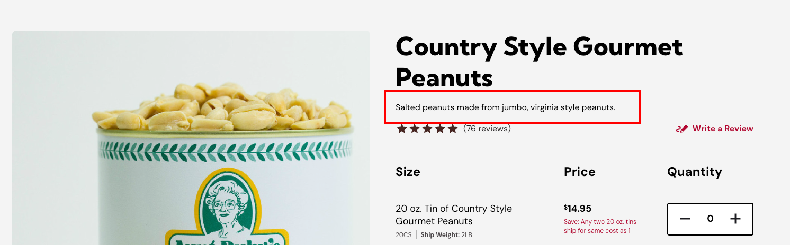
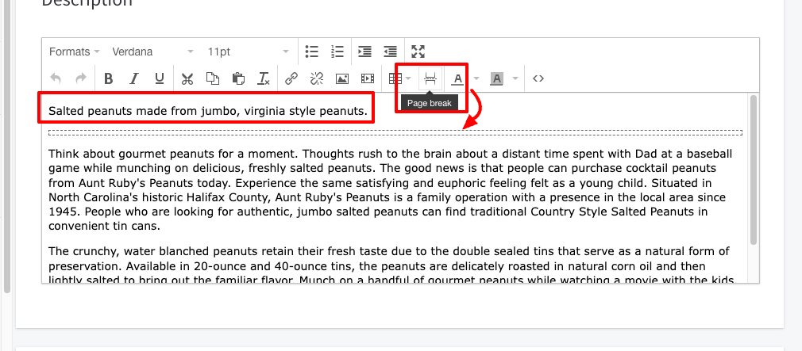
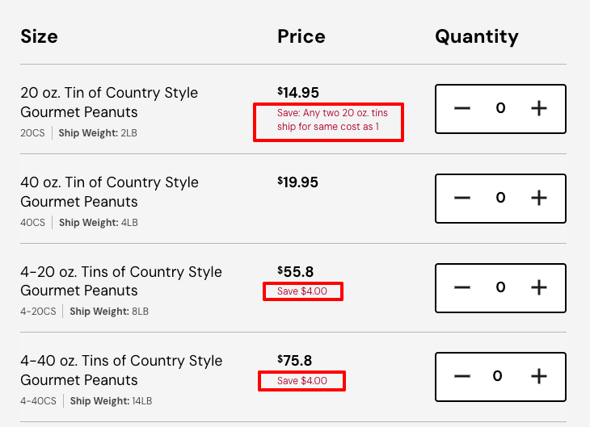
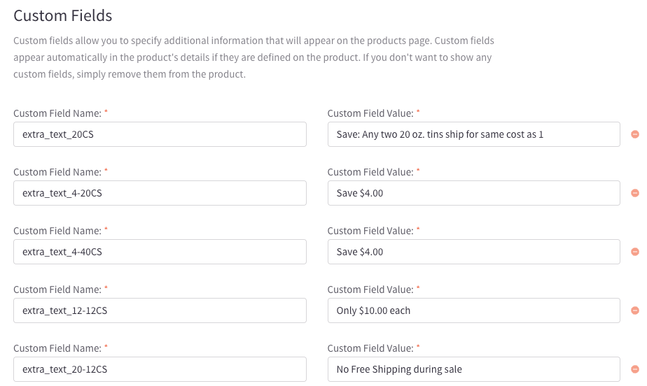

Product Page
The product page displays the information about the product. It includes the product name, description, price, options, and an image of the product.
Most of the product page is built with the default BigCommerce settings, for more information regarding how to add a product in Bigcommerce with the V2 settings, refer to this documentation.
There are some parts on the product page that need to follow specific guidelines.
Short Description

The short description is a brief description of the product. It should be a short paragraph that describes the product in a few sentences. The short description should be displayed at the top of the product page. It is not mandatory, so not all the products will have it.
To add it, go to the product settings in BigCommerce and add the short description in the 'Descrpiption' field, followed by a 'pagebreak'. Whatever is at the top of the pagebreak, will become the short description. If no pagebreak is present in the description, then all the content will be placed in the 'Description' tab.

Variants Info

The variants info is used to display especial information about the product variants. It is displayed below the price of each varant. To change this information, go to a product in BigCommcerc and scroll to the Custom Fields. The custom field should follow a specific syntax, starting with extra_text_ and followed by the SKU of the variant, for example: extra_text_12345. The value of the custom field will be displayed below the price of the variant.

Product tabs
The product tabs are used to display additional information about the product. The tabs include the description, additional info, and shipping info. The 'Description' tab content comes from the product description. If a pagebreak is present in the description, the content below the pagebreak will be placed in the description tab. If no pagebreak is present, then all the content will be placed in the description tab. The 'Additional Info' tab content comes from a custom field called 'additional_info'. The 'Shipping' tab content comes from the 'Availability text' field in the product settings.
.....in progress....